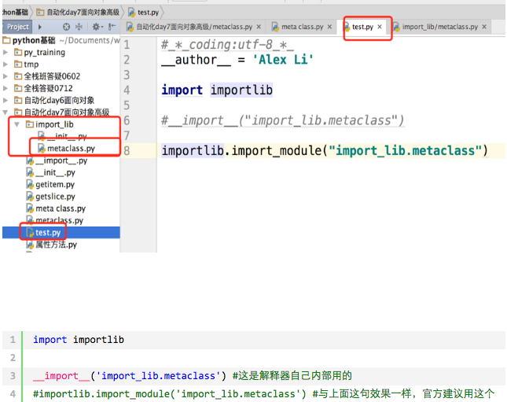

5.11 内置方法
一 isinstance(obj,cls)和issubclass(sub,super)
isinstance(obj,cls)检查是否obj是否是类 cls 的对象
class Foo(object):
pass
obj = Foo()
isinstance(obj, Foo)
issubclass(sub, super)检查sub类是否是 super 类的派生类
class Foo(object):
pass
class Bar(Foo):
pass
issubclass(Bar, Foo)
二 反射
1 什么是反射
反射的概念是由Smith在1982年首次提出的，主要是指程序可以访问、检测和修改它本身状态或行为的一种能力（自省）。这一概念的提出很快引发了计算机科学领域关于应用反射性的研究。它首先被程序语言的设计领域所采用,并在Lisp和面向对象方面取得了成绩。
2 python面向对象中的反射：通过字符串的形式操作对象相关的属性。python中的一切事物都是对象（都可以使用反射）
四个可以实现自省的函数 下列方法适用于类和对象（一切皆对象，类本身也是一个对象）
hasattr(object,name)
判断object中有没有一个name字符串对应的方法或属性
getattr(object, name, default=None)
def getattr(object, name, default=None): # known special case of getattr
"""
getattr(object, name[, default]) -> value
Get a named attribute from an object; getattr(x, 'y') is equivalent to x.y.
When a default argument is given, it is returned when the attribute doesn't
exist; without it, an exception is raised in that case.
"""
pass
setattr(x, y, v)
def setattr(x, y, v): # real signature unknown; restored from __doc__
"""
Sets the named attribute on the given object to the specified value.
setattr(x, 'y', v) is equivalent to ``x.y = v''
"""
pass
delattr(x, y)
def delattr(x, y): # real signature unknown; restored from __doc__
"""
Deletes the named attribute from the given object.
delattr(x, 'y') is equivalent to ``del x.y''
"""
pass
四个方法的使用演示
class BlackMedium:
feature='Ugly'
def __init__(self,name,addr):
self.name=name
self.addr=addr
def sell_house(self):
print('%25s 黑中介卖房子啦,傻逼才买呢,但是谁能证明自己不傻逼' %25self.name)
def rent_house(self):
print('%25s 黑中介租房子啦,傻逼才租呢' %25self.name)
b1=BlackMedium('万成置地','回龙观天露园')
#检测是否含有某属性
print(hasattr(b1,'name'))
print(hasattr(b1,'sell_house'))
#获取属性
n=getattr(b1,'name')
print(n)
func=getattr(b1,'rent_house')
func()
# getattr(b1,'aaaaaaaa') #报错
print(getattr(b1,'aaaaaaaa','不存在啊'))
#设置属性
setattr(b1,'sb',True)
setattr(b1,'show_name',lambda self:self.name+'sb')
print(b1.__dict__)
print(b1.show_name(b1))
#删除属性
delattr(b1,'addr')
delattr(b1,'show_name')
delattr(b1,'show_name111')#不存在,则报错
print(b1.__dict__)
类也是对象
class Foo(object):
staticField = "old boy"
def __init__(self):
self.name = 'wupeiqi'
def func(self):
return 'func'
@staticmethod
def bar():
return 'bar'
print getattr(Foo, 'staticField')
print getattr(Foo, 'func')
print getattr(Foo, 'bar')
反射当前模块成员
#!/usr/bin/env python
# -*- coding:utf-8 -*-
import sys
def s1():
print 's1'
def s2():
print 's2'
this_module = sys.modules[__name__]
hasattr(this_module, 's1')
getattr(this_module, 's2')
导入其他模块，利用反射查找该模块是否存在某个方法
module_test.py
#!/usr/bin/env python
# -*- coding:utf-8 -*-
"""
程序目录：
module_test.py
index.py
当前文件：
index.py
"""
import module_test as obj
#obj.test()
print(hasattr(obj,'test'))
getattr(obj,'test')()
3 为什么用反射之反射的好处
好处一：实现可插拔机制
有俩程序员，一个lili，一个是egon，lili在写程序的时候需要用到egon所写的类，但是egon去跟女朋友度蜜月去了，还没有完成他写的类，lili想到了反射，使用了反射机制lili可以继续完成自己的代码，等egon度蜜月回来后再继续完成类的定义并且去实现lili想要的功能。
总之反射的好处就是，可以事先定义好接口，接口只有在被完成后才会真正执行，这实现了即插即用，这其实是一种‘后期绑定’，什么意思？即你可以事先把主要的逻辑写好（只定义接口），然后后期再去实现接口的功能
egon还没有实现全部功能
class FtpClient:
'ftp客户端,但是还么有实现具体的功能'
def __init__(self,addr):
print('正在连接服务器[%25s]' %25addr)
self.addr=addr
不影响lili的代码编写
#from module import FtpClient
f1=FtpClient('192.168.1.1')
if hasattr(f1,'get'):
func_get=getattr(f1,'get')
func_get()
else:
print('---->不存在此方法')
print('处理其他的逻辑')
好处二：动态导入模块（基于反射当前模块成员）

三 __setattr__,__delattr__,__getattr__
三者的用法演示
class Foo:
x=1
def __init__(self,y):
self.y=y
def __getattr__(self, item):
print('----> from getattr:你找的属性不存在')
def __setattr__(self, key, value):
print('----> from setattr')
# self.key=value #这就无限递归了,你好好想想
# self.__dict__[key]=value #应该使用它
def __delattr__(self, item):
print('----> from delattr')
# del self.item #无限递归了
self.__dict__.pop(item)
#__setattr__添加/修改属性会触发它的执行
f1=Foo(10)
print(f1.__dict__) # 因为你重写了__setattr__,凡是赋值操作都会触发它的运行,你啥都没写,就是根本没赋值,除非你直接操作属性字典,否则永远无法赋值
f1.z=3
print(f1.__dict__)
#__delattr__删除属性的时候会触发
f1.__dict__['a']=3#我们可以直接修改属性字典,来完成添加/修改属性的操作
del f1.a
print(f1.__dict__)
#__getattr__只有在使用点调用属性且属性不存在的时候才会触发
f1.xxxxxx
四 二次加工标准类型(包装)
包装：python为大家提供了标准数据类型，以及丰富的内置方法，其实在很多场景下我们都需要基于标准数据类型来定制我们自己的数据类型，新增/改写方法，这就用到了我们刚学的继承/派生知识（其他的标准类型均可以通过下面的方式进行二次加工）
二次加工标准类型(基于继承实现)
class List(list): #继承list所有的属性，也可以派生出自己新的，比如append和mid
def append(self, p_object):
' 派生自己的append：加上类型检查'
if not isinstance(p_object,int):
raise TypeError('must be int')
super().append(p_object)
@property
def mid(self):
'新增自己的属性'
index=len(self)//2
return self[index]
l=List([1,2,3,4])
print(l)
l.append(5)
print(l)
# l.append('1111111') #报错，必须为int类型
print(l.mid)
#其余的方法都继承list的
l.insert(0,-123)
print(l)
l.clear()
print(l)
练习（clear加权限限制）
class List(list):
def __init__(self,item,tag=False):
super().__init__(item)
self.tag=tag
def append(self, p_object):
if not isinstance(p_object,str):
raise TypeError
super().append(p_object)
def clear(self):
if not self.tag:
raise PermissionError
super().clear()
l=List([1,2,3],False)
print(l)
print(l.tag)
l.append('saf')
print(l)
# l.clear() #异常
l.tag=True
l.clear()
```py
授权：授权是包装的一个特性, 包装一个类型通常是对已存在的类型的一些定制,这种做法可以新建,修改或删除原有产品的功能。其它的则保持原样。授权的过程,即是所有更新的功能都是由新类的某部分来处理,但已存在的功能就授权给对象的默认属性。
实现授权的关键点就是覆盖\_\_getattr\_\_方法
**授权示范一**
```py
import time
class FileHandle:
def __init__(self,filename,mode='r',encoding='utf-8'):
self.file=open(filename,mode,encoding=encoding)
def write(self,line):
t=time.strftime('%25Y-%25m-%25d %25T')
self.file.write('%25s %25s' %25(t,line))
def __getattr__(self, item):
return getattr(self.file,item)
f1=FileHandle('b.txt','w+')
f1.write('你好啊')
f1.seek(0)
print(f1.read())
f1.close()
授权示范二
#_*_coding:utf-8_*_
__author__ = 'Linhaifeng'
#我们来加上b模式支持
import time
class FileHandle:
def __init__(self,filename,mode='r',encoding='utf-8'):
if 'b' in mode:
self.file=open(filename,mode)
else:
self.file=open(filename,mode,encoding=encoding)
self.filename=filename
self.mode=mode
self.encoding=encoding
def write(self,line):
if 'b' in self.mode:
if not isinstance(line,bytes):
raise TypeError('must be bytes')
self.file.write(line)
def __getattr__(self, item):
return getattr(self.file,item)
def __str__(self):
if 'b' in self.mode:
res="<_io.BufferedReader name='%25s'>" %25self.filename
else:
res="<_io.TextIOWrapper name='%25s' mode='%25s' encoding='%25s'>" %25(self.filename,self.mode,self.encoding)
return res
f1=FileHandle('b.txt','wb')
# f1.write('你好啊啊啊啊啊') #自定制的write,不用在进行encode转成二进制去写了,简单,大气
f1.write('你好啊'.encode('utf-8'))
print(f1)
f1.close()
练习题（授权）
#练习一
class List:
def __init__(self,seq):
self.seq=seq
def append(self, p_object):
' 派生自己的append加上类型检查，覆盖原有的append'
if not isinstance(p_object,int):
raise TypeError('must be int')
self.seq.append(p_object)
@property
def mid(self):
'新增自己的方法'
index=len(self.seq)//2
return self.seq[index]
def __getattr__(self, item):
return getattr(self.seq,item)
def __str__(self):
return str(self.seq)
l=List([1,2,3])
print(l)
l.append(4)
print(l)
# l.append('3333333') #报错，必须为int类型
print(l.mid)
#基于授权，获得insert方法
l.insert(0,-123)
print(l)
#练习二
class List:
def __init__(self,seq,permission=False):
self.seq=seq
self.permission=permission
def clear(self):
if not self.permission:
raise PermissionError('not allow the operation')
self.seq.clear()
def __getattr__(self, item):
return getattr(self.seq,item)
def __str__(self):
return str(self.seq)
l=List([1,2,3])
# l.clear() #此时没有权限，抛出异常
l.permission=True
print(l)
l.clear()
print(l)
#基于授权，获得insert方法
l.insert(0,-123)
print(l)
五 __getattribute__
回顾__getattr__
class Foo:
def __init__(self,x):
self.x=x
def __getattr__(self, item):
print('执行的是我')
# return self.__dict__[item]
f1=Foo(10)
print(f1.x)
f1.xxxxxx #不存在的属性访问，触发__getattr__
getattribute
class Foo:
def __init__(self,x):
self.x=x
def __getattribute__(self, item):
print('不管是否存在,我都会执行')
f1=Foo(10)
f1.x
f1.xxxxxx
二者同时出现
#_*_coding:utf-8_*_
__author__ = 'Linhaifeng'
class Foo:
def __init__(self,x):
self.x=x
def __getattr__(self, item):
print('执行的是我')
# return self.__dict__[item]
def __getattribute__(self, item):
print('不管是否存在,我都会执行')
raise AttributeError('哈哈')
f1=Foo(10)
f1.x
f1.xxxxxx
#当__getattribute__与__getattr__同时存在,只会执行__getattrbute__,除非__getattribute__在执行过程中抛出异常AttributeError
六 描述符(__get__,__set__,__delete__)
1 描述符是什么:描述符本质就是一个新式类,在这个新式类中,至少实现了__get__(),__set__(),__delete__()中的一个,这也被称为描述符协议 __get__():调用一个属性时,触发 __set__():为一个属性赋值时,触发 __delete__():采用del删除属性时,触发
定义一个描述符
class Foo: #在python3中Foo是新式类,它实现了三种方法,这个类就被称作一个描述符
def __get__(self, instance, owner):
pass
def __set__(self, instance, value):
pass
def __delete__(self, instance):
pass
2 描述符是干什么的:描述符的作用是用来代理另外一个类的属性的(必须把描述符定义成这个类的类属性，不能定义到构造函数中)
引子:描述符类产生的实例进行属性操作并不会触发三个方法的执行
class Foo:
def __get__(self, instance, owner):
print('触发get')
def __set__(self, instance, value):
print('触发set')
def __delete__(self, instance):
print('触发delete')
#包含这三个方法的新式类称为描述符,由这个类产生的实例进行属性的调用/赋值/删除,并不会触发这三个方法
f1=Foo()
f1.name='egon'
f1.name
del f1.name
#疑问:何时,何地,会触发这三个方法的执行
描述符应用之何时?何地?
#描述符Str
class Str:
def __get__(self, instance, owner):
print('Str调用')
def __set__(self, instance, value):
print('Str设置...')
def __delete__(self, instance):
print('Str删除...')
#描述符Int
class Int:
def __get__(self, instance, owner):
print('Int调用')
def __set__(self, instance, value):
print('Int设置...')
def __delete__(self, instance):
print('Int删除...')
class People:
name=Str()
age=Int()
def __init__(self,name,age): #name被Str类代理,age被Int类代理,
self.name=name
self.age=age
#何地？：定义成另外一个类的类属性
#何时？：且看下列演示
p1=People('alex',18)
#描述符Str的使用
p1.name
p1.name='egon'
del p1.name
#描述符Int的使用
p1.age
p1.age=18
del p1.age
#我们来瞅瞅到底发生了什么
print(p1.__dict__)
print(People.__dict__)
#补充
print(type(p1) == People) #type(obj)其实是查看obj是由哪个类实例化来的
print(type(p1).__dict__ == People.__dict__)
3 描述符分两种 一 数据描述符:至少实现了__get__()和__set__()
class Foo:
def __set__(self, instance, value):
print('set')
def __get__(self, instance, owner):
print('get')
二 非数据描述符:没有实现__set__()
class Foo:
def __get__(self, instance, owner):
print('get')
4 注意事项: 一 描述符本身应该定义成新式类,被代理的类也应该是新式类 二 必须把描述符定义成这个类的类属性，不能为定义到构造函数中 三 要严格遵循该优先级,优先级由高到底分别是 1.类属性 2.数据描述符 3.实例属性 4.非数据描述符 5.找不到的属性触发__getattr__()
类属性>数据描述符
#描述符Str
class Str:
def __get__(self, instance, owner):
print('Str调用')
def __set__(self, instance, value):
print('Str设置...')
def __delete__(self, instance):
print('Str删除...')
class People:
name=Str()
def __init__(self,name,age): #name被Str类代理,age被Int类代理,
self.name=name
self.age=age
#基于上面的演示,我们已经知道,在一个类中定义描述符它就是一个类属性,存在于类的属性字典中,而不是实例的属性字典
#那既然描述符被定义成了一个类属性,直接通过类名也一定可以调用吧,没错
People.name #恩,调用类属性name,本质就是在调用描述符Str,触发了__get__()
People.name='egon' #那赋值呢,我去,并没有触发__set__()
del People.name #赶紧试试del,我去,也没有触发__delete__()
#结论:描述符对类没有作用-------->傻逼到家的结论
'''
原因:描述符在使用时被定义成另外一个类的类属性,因而类属性比二次加工的描述符伪装而来的类属性有更高的优先级
People.name #恩,调用类属性name,找不到就去找描述符伪装的类属性name,触发了__get__()
People.name='egon' #那赋值呢,直接赋值了一个类属性,它拥有更高的优先级,相当于覆盖了描述符,肯定不会触发描述符的__set__()
del People.name #同上
'''
数据描述符>实例属性
#描述符Str
class Str:
def __get__(self, instance, owner):
print('Str调用')
def __set__(self, instance, value):
print('Str设置...')
def __delete__(self, instance):
print('Str删除...')
class People:
name=Str()
def __init__(self,name,age): #name被Str类代理,age被Int类代理,
self.name=name
self.age=age
p1=People('egon',18)
#如果描述符是一个数据描述符(即有__get__又有__set__),那么p1.name的调用与赋值都是触发描述符的操作,于p1本身无关了,相当于覆盖了实例的属性
p1.name='egonnnnnn'
p1.name
print(p1.__dict__)#实例的属性字典中没有name,因为name是一个数据描述符,优先级高于实例属性,查看/赋值/删除都是跟描述符有关,与实例无关了
del p1.name
实例属性>非数据描述符
class Foo:
def func(self):
print('我胡汉三又回来了')
f1=Foo()
f1.func() #调用类的方法,也可以说是调用非数据描述符
#函数是一个非数据描述符对象(一切皆对象么)
print(dir(Foo.func))
print(hasattr(Foo.func,'__set__'))
print(hasattr(Foo.func,'__get__'))
print(hasattr(Foo.func,'__delete__'))
#有人可能会问,描述符不都是类么,函数怎么算也应该是一个对象啊,怎么就是描述符了
#笨蛋哥,描述符是类没问题,描述符在应用的时候不都是实例化成一个类属性么
#函数就是一个由非描述符类实例化得到的对象
#没错，字符串也一样
f1.func='这是实例属性啊'
print(f1.func)
del f1.func #删掉了非数据
f1.func()
再次验证：实例属性>非数据描述符
class Foo:
def __set__(self, instance, value):
print('set')
def __get__(self, instance, owner):
print('get')
class Room:
name=Foo()
def __init__(self,name,width,length):
self.name=name
self.width=width
self.length=length
#name是一个数据描述符,因为name=Foo()而Foo实现了get和set方法,因而比实例属性有更高的优先级
#对实例的属性操作,触发的都是描述符的
r1=Room('厕所',1,1)
r1.name
r1.name='厨房'
class Foo:
def __get__(self, instance, owner):
print('get')
class Room:
name=Foo()
def __init__(self,name,width,length):
self.name=name
self.width=width
self.length=length
#name是一个非数据描述符,因为name=Foo()而Foo没有实现set方法,因而比实例属性有更低的优先级
#对实例的属性操作,触发的都是实例自己的
r1=Room('厕所',1,1)
r1.name
r1.name='厨房'
非数据描述符>找不到
class Foo:
def func(self):
print('我胡汉三又回来了')
def __getattr__(self, item):
print('找不到了当然是来找我啦',item)
f1=Foo()
f1.xxxxxxxxxxx
5 描述符使用
众所周知，python是弱类型语言，即参数的赋值没有类型限制，下面我们通过描述符机制来实现类型限制功能
牛刀小试
class Str:
def __init__(self,name):
self.name=name
def __get__(self, instance, owner):
print('get--->',instance,owner)
return instance.__dict__[self.name]
def __set__(self, instance, value):
print('set--->',instance,value)
instance.__dict__[self.name]=value
def __delete__(self, instance):
print('delete--->',instance)
instance.__dict__.pop(self.name)
class People:
name=Str('name')
def __init__(self,name,age,salary):
self.name=name
self.age=age
self.salary=salary
p1=People('egon',18,3231.3)
#调用
print(p1.__dict__)
p1.name
#赋值
print(p1.__dict__)
p1.name='egonlin'
print(p1.__dict__)
#删除
print(p1.__dict__)
del p1.name
print(p1.__dict__)
拔刀相助
class Str:
def __init__(self,name):
self.name=name
def __get__(self, instance, owner):
print('get--->',instance,owner)
return instance.__dict__[self.name]
def __set__(self, instance, value):
print('set--->',instance,value)
instance.__dict__[self.name]=value
def __delete__(self, instance):
print('delete--->',instance)
instance.__dict__.pop(self.name)
class People:
name=Str('name')
def __init__(self,name,age,salary):
self.name=name
self.age=age
self.salary=salary
#疑问:如果我用类名去操作属性呢
People.name #报错,错误的根源在于类去操作属性时,会把None传给instance
#修订__get__方法
class Str:
def __init__(self,name):
self.name=name
def __get__(self, instance, owner):
print('get--->',instance,owner)
if instance is None:
return self
return instance.__dict__[self.name]
def __set__(self, instance, value):
print('set--->',instance,value)
instance.__dict__[self.name]=value
def __delete__(self, instance):
print('delete--->',instance)
instance.__dict__.pop(self.name)
class People:
name=Str('name')
def __init__(self,name,age,salary):
self.name=name
self.age=age
self.salary=salary
print(People.name) #完美,解决
磨刀霍霍
class Str:
def __init__(self,name,expected_type):
self.name=name
self.expected_type=expected_type
def __get__(self, instance, owner):
print('get--->',instance,owner)
if instance is None:
return self
return instance.__dict__[self.name]
def __set__(self, instance, value):
print('set--->',instance,value)
if not isinstance(value,self.expected_type): #如果不是期望的类型，则抛出异常
raise TypeError('Expected %25s' %25str(self.expected_type))
instance.__dict__[self.name]=value
def __delete__(self, instance):
print('delete--->',instance)
instance.__dict__.pop(self.name)
class People:
name=Str('name',str) #新增类型限制str
def __init__(self,name,age,salary):
self.name=name
self.age=age
self.salary=salary
p1=People(123,18,3333.3)#传入的name因不是字符串类型而抛出异常
大刀阔斧
class Typed:
def __init__(self,name,expected_type):
self.name=name
self.expected_type=expected_type
def __get__(self, instance, owner):
print('get--->',instance,owner)
if instance is None:
return self
return instance.__dict__[self.name]
def __set__(self, instance, value):
print('set--->',instance,value)
if not isinstance(value,self.expected_type):
raise TypeError('Expected %25s' %25str(self.expected_type))
instance.__dict__[self.name]=value
def __delete__(self, instance):
print('delete--->',instance)
instance.__dict__.pop(self.name)
class People:
name=Typed('name',str)
age=Typed('name',int)
salary=Typed('name',float)
def __init__(self,name,age,salary):
self.name=name
self.age=age
self.salary=salary
p1=People(123,18,3333.3)
p1=People('egon','18',3333.3)
p1=People('egon',18,3333)
大刀阔斧之后我们已然能实现功能了，但是问题是，如果我们的类有很多属性，你仍然采用在定义一堆类属性的方式去实现，low，这时候我需要教你一招：独孤九剑
类的装饰器:无参
def decorate(cls):
print('类的装饰器开始运行啦------>')
return cls
@decorate #无参:People=decorate(People)
class People:
def __init__(self,name,age,salary):
self.name=name
self.age=age
self.salary=salary
p1=People('egon',18,3333.3)
类的装饰器:有参
def typeassert(**kwargs):
def decorate(cls):
print('类的装饰器开始运行啦------>',kwargs)
return cls
return decorate
@typeassert(name=str,age=int,salary=float) #有参:1.运行typeassert(...)返回结果是decorate,此时参数都传给kwargs 2.People=decorate(People)
class People:
def __init__(self,name,age,salary):
self.name=name
self.age=age
self.salary=salary
p1=People('egon',18,3333.3)
终极大招
刀光剑影
class Typed:
def __init__(self,name,expected_type):
self.name=name
self.expected_type=expected_type
def __get__(self, instance, owner):
print('get--->',instance,owner)
if instance is None:
return self
return instance.__dict__[self.name]
def __set__(self, instance, value):
print('set--->',instance,value)
if not isinstance(value,self.expected_type):
raise TypeError('Expected %25s' %25str(self.expected_type))
instance.__dict__[self.name]=value
def __delete__(self, instance):
print('delete--->',instance)
instance.__dict__.pop(self.name)
def typeassert(**kwargs):
def decorate(cls):
print('类的装饰器开始运行啦------>',kwargs)
for name,expected_type in kwargs.items():
setattr(cls,name,Typed(name,expected_type))
return cls
return decorate
@typeassert(name=str,age=int,salary=float) #有参:1.运行typeassert(...)返回结果是decorate,此时参数都传给kwargs 2.People=decorate(People)
class People:
def __init__(self,name,age,salary):
self.name=name
self.age=age
self.salary=salary
print(People.__dict__)
p1=People('egon',18,3333.3)
6 描述符总结
描述符是可以实现大部分python类特性中的底层魔法,包括@classmethod,@staticmethd,@property甚至是__slots__属性
描述父是很多高级库和框架的重要工具之一,描述符通常是使用到装饰器或者元类的大型框架中的一个组件.
7 利用描述符原理完成一个自定制@property,实现延迟计算（本质就是把一个函数属性利用装饰器原理做成一个描述符：类的属性字典中函数名为key，value为描述符类产生的对象）
@property回顾
class Room:
def __init__(self,name,width,length):
self.name=name
self.width=width
self.length=length
@property
def area(self):
return self.width * self.length
r1=Room('alex',1,1)
print(r1.area)
自己做一个@property
class Lazyproperty:
def __init__(self,func):
self.func=func
def __get__(self, instance, owner):
print('这是我们自己定制的静态属性,r1.area实际是要执行r1.area()')
if instance is None:
return self
return self.func(instance) #此时你应该明白,到底是谁在为你做自动传递self的事情
class Room:
def __init__(self,name,width,length):
self.name=name
self.width=width
self.length=length
@Lazyproperty #area=Lazyproperty(area) 相当于定义了一个类属性,即描述符
def area(self):
return self.width * self.length
r1=Room('alex',1,1)
print(r1.area)
实现延迟计算功能
class Lazyproperty:
def __init__(self,func):
self.func=func
def __get__(self, instance, owner):
print('这是我们自己定制的静态属性,r1.area实际是要执行r1.area()')
if instance is None:
return self
else:
print('--->')
value=self.func(instance)
setattr(instance,self.func.__name__,value) #计算一次就缓存到实例的属性字典中
return value
class Room:
def __init__(self,name,width,length):
self.name=name
self.width=width
self.length=length
@Lazyproperty #area=Lazyproperty(area) 相当于'定义了一个类属性,即描述符'
def area(self):
return self.width * self.length
r1=Room('alex',1,1)
print(r1.area) #先从自己的属性字典找,没有再去类的中找,然后出发了area的__get__方法
print(r1.area) #先从自己的属性字典找,找到了,是上次计算的结果,这样就不用每执行一次都去计算
一个小的改动，延迟计算的美梦就破碎了
#缓存不起来了
class Lazyproperty:
def __init__(self,func):
self.func=func
def __get__(self, instance, owner):
print('这是我们自己定制的静态属性,r1.area实际是要执行r1.area()')
if instance is None:
return self
else:
value=self.func(instance)
instance.__dict__[self.func.__name__]=value
return value
# return self.func(instance) #此时你应该明白,到底是谁在为你做自动传递self的事情
def __set__(self, instance, value):
print('hahahahahah')
class Room:
def __init__(self,name,width,length):
self.name=name
self.width=width
self.length=length
@Lazyproperty #area=Lazyproperty(area) 相当于定义了一个类属性,即描述符
def area(self):
return self.width * self.length
print(Room.__dict__)
r1=Room('alex',1,1)
print(r1.area)
print(r1.area)
print(r1.area)
print(r1.area) #缓存功能失效,每次都去找描述符了,为何,因为描述符实现了set方法,它由非数据描述符变成了数据描述符,数据描述符比实例属性有更高的优先级,因而所有的属性操作都去找描述符了
8 利用描述符原理完成一个自定制@classmethod
自己做一个@classmethod
class ClassMethod:
def __init__(self,func):
self.func=func
def __get__(self, instance, owner): #类来调用,instance为None,owner为类本身,实例来调用,instance为实例,owner为类本身,
def feedback():
print('在这里可以加功能啊...')
return self.func(owner)
return feedback
class People:
name='linhaifeng'
@ClassMethod # say_hi=ClassMethod(say_hi)
def say_hi(cls):
print('你好啊,帅哥 %25s' %25cls.name)
People.say_hi()
p1=People()
p1.say_hi()
#疑问,类方法如果有参数呢,好说,好说
class ClassMethod:
def __init__(self,func):
self.func=func
def __get__(self, instance, owner): #类来调用,instance为None,owner为类本身,实例来调用,instance为实例,owner为类本身,
def feedback(*args,**kwargs):
print('在这里可以加功能啊...')
return self.func(owner,*args,**kwargs)
return feedback
class People:
name='linhaifeng'
@ClassMethod # say_hi=ClassMethod(say_hi)
def say_hi(cls,msg):
print('你好啊,帅哥 %25s %25s' %25(cls.name,msg))
People.say_hi('你是那偷心的贼')
p1=People()
p1.say_hi('你是那偷心的贼')
9 利用描述符原理完成一个自定制的@staticmethod
自己做一个@staticmethod
class StaticMethod:
def __init__(self,func):
self.func=func
def __get__(self, instance, owner): #类来调用,instance为None,owner为类本身,实例来调用,instance为实例,owner为类本身,
def feedback(*args,**kwargs):
print('在这里可以加功能啊...')
return self.func(*args,**kwargs)
return feedback
class People:
@StaticMethod# say_hi=StaticMethod(say_hi)
def say_hi(x,y,z):
print('------>',x,y,z)
People.say_hi(1,2,3)
p1=People()
p1.say_hi(4,5,6)
六 再看property
一个静态属性property本质就是实现了get，set，delete三种方法
用法一
class Foo:
@property
def AAA(self):
print('get的时候运行我啊')
@AAA.setter
def AAA(self,value):
print('set的时候运行我啊')
@AAA.deleter
def AAA(self):
print('delete的时候运行我啊')
#只有在属性AAA定义property后才能定义AAA.setter,AAA.deleter
f1=Foo()
f1.AAA
f1.AAA='aaa'
del f1.AAA
用法二
class Foo:
def get_AAA(self):
print('get的时候运行我啊')
def set_AAA(self,value):
print('set的时候运行我啊')
def delete_AAA(self):
print('delete的时候运行我啊')
AAA=property(get_AAA,set_AAA,delete_AAA) #内置property三个参数与get,set,delete一一对应
f1=Foo()
f1.AAA
f1.AAA='aaa'
del f1.AAA
怎么用？
案例一
class Goods:
def __init__(self):
# 原价
self.original_price = 100
# 折扣
self.discount = 0.8
@property
def price(self):
# 实际价格 = 原价 * 折扣
new_price = self.original_price * self.discount
return new_price
@price.setter
def price(self, value):
self.original_price = value
@price.deleter
def price(self):
del self.original_price
obj = Goods()
obj.price # 获取商品价格
obj.price = 200 # 修改商品原价
print(obj.price)
del obj.price # 删除商品原价
案例二
#实现类型检测功能
#第一关：
class People:
def __init__(self,name):
self.name=name
@property
def name(self):
return self.name
# p1=People('alex') #property自动实现了set和get方法属于数据描述符,比实例属性优先级高,所以你这面写会触发property内置的set,抛出异常
#第二关：修订版
class People:
def __init__(self,name):
self.name=name #实例化就触发property
@property
def name(self):
# return self.name #无限递归
print('get------>')
return self.DouNiWan
@name.setter
def name(self,value):
print('set------>')
self.DouNiWan=value
@name.deleter
def name(self):
print('delete------>')
del self.DouNiWan
p1=People('alex') #self.name实际是存放到self.DouNiWan里
print(p1.name)
print(p1.name)
print(p1.name)
print(p1.__dict__)
p1.name='egon'
print(p1.__dict__)
del p1.name
print(p1.__dict__)
#第三关:加上类型检查
class People:
def __init__(self,name):
self.name=name #实例化就触发property
@property
def name(self):
# return self.name #无限递归
print('get------>')
return self.DouNiWan
@name.setter
def name(self,value):
print('set------>')
if not isinstance(value,str):
raise TypeError('必须是字符串类型')
self.DouNiWan=value
@name.deleter
def name(self):
print('delete------>')
del self.DouNiWan
p1=People('alex') #self.name实际是存放到self.DouNiWan里
p1.name=1